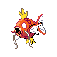

Choose your challenge of liking:

Choose your challenge of liking:
Lvl 100 Magikarp
| Difficulty | Could be Worse |
| Rating |

|
| Type | Challenge |
Objective
Catch the Lvl 100 Magikarp
Rules
No Cheats
Nobody believes me, but something lurks in the Resort Area. It's the hidden ruler of the area! You have to believe me!
Ahh, Magikarp. The strongest Pokémon in existence. According to the Pokédex, "It is said to be the world's weakest Pokémon. No one knows why it has managed to survive."
Oh wait. Um, ignore that. In fact, in order to prove that Magikarp is objectively the strongest Pokémon in the entire game, we are going to catch a Level 100 Magikarp. Now, where would we find a guide on this... Oh wait.
The Resort Area in Pokémon Platinum, is one of the only places where Level 100 Magikarp can be caught in the wild.
Unfortunately, with a Super Rod, there is a 1 in 10,000 chance of capturing such a Magikarp.
There are 5 possible level ranges for Magikarp, each with a different probability of being chosen.
| Probability | Level Range |
| 40% | 40-60 |
| 40% | 30-70 |
| 15% | 20-80 |
| 4% | 10-90 |
| 1% | 1-100 |
That means there is a 1 in 100 chance of getting the Level 1-100 range, and then another 1 in 100 chance of getting the Level 100 Magikarp within the range, giving the 1 in 10,000 chance.
For reference, the base chance of getting a Shiny Pokémon is 1 in 8,192 in Generations 1-5, and 1 in 4,096 in Generations 6 onwards.
From Pokémon Emerald onwards, a Pokémon with the abilities Hustle, Pressure and Vital Spirit, when placed in the first place in the party, have a 50% chance to force Pokémon encounters to be the highest level possible (in their encounter level range).
This means that, when getting the 1% chance for the Level 1-100 range, the 50% chance of it being forced to be the Level 100 Magikarp becomes 1 in 200, or 0.5%, a much better chance.
Pokémon you might want to use:
| Pokémon | Ability | Location |
| Togepi | Hustle | Cynthia's Egg (Eterna City) Route 230 (Poké Radar) |
| Togetic | Hustle | Evolve Togepi |
| Remoraid | Hustle | Routes 212, 213, 222, 223, 224, and 230 Pastoria City, Sunyshore City, Pokémon League |
| Dusclops | Pressure | Sendoff Spring, Turnback Cave |
| Dusknoir | Pressure | Evolve Dusclops |
| Absol | Pressure | Mt. Coronet (Summit) |
| Weaville | Pressure | Evolve Sneasel |
| Giratina | Pressure | Distortion World Turnback Cave |
Pokémon that may be more difficult to find:
| Pokémon | Ability | Location |
| Dialga | Pressure | Spear Pillar (Requires Adamant Orb) |
| Palkia | Pressure | Spear Pillar (Requires Lustrous Orb) |
| Spiritomb | Pressure | Route 209 (Hallowed Tower) |
| Vespiquen | Pressure | Evolve Female Combee (Honey Tree) |
| Aerodactyl | Pressure | Revive from Old Amber at Oreburgh Mining Museum |
| Moltres | Pressure | Roaming Sinnoh (After talking to Prof. Oak in Eterna City) |
| Zapdos | Pressure | Roaming Sinnoh (After talking to Prof. Oak in Eterna City) |
| Articuno | Pressure | Roaming Sinnoh (After talking to Prof. Oak in Eterna City) |
Of all the Pokémon, Giratina is the best choice as it's a required encounter.
Try to have a Pokémon that can inflict Sleep or Paralysis (not that Magikarp is hard to catch)
The best Pokéball to use is the Net Ball, as it has a 3× catch rate compared to the normal Pokéball, or the Quick Ball.
With a bit of luck and time, you will be able to find the Level 100 Magikarp!
Unlike Level 100 Magikarp, there is no method to specifically target Magikarp in this range. As such, the 1 in 10,000 chance remains.
However, Pokémon with the Intimidate or Keen Eye ability may be able to make the process quicker. If such a Pokémon is placed in the first position in the party, there is a 50% chance that a wild encounter can be avoided, but only if the Pokémon is at least 5 levels below it.
That means, with a Level 95 Pokémon, Magikarp in the level range 1-90 have a 50% chance of being avoided.
Pokémon you might want to use:
| Pokémon | Ability | Location |
| Noctowl | Keen Eye | Routes 210, 211 (Night) Great Marsh, Mt. Coronet (Night) Evolve Hoothoot |
| Pelipper | Keen Eye |
Routes 219, 220, 221, 223, and 226 (Surfing) Iron Island, Pokémon League, Sunyshore City (Surfing) Routes 222, 224, and 230 (Grass or Surfing) Evolve Wingull |
| Gyarados | Intimidate | Evolve Magikarp (Now where could we find that...) |
| Staraptor | Intimidate | Evolve Staravia |
| Luxray | Intimidate | Evolve Luxio |
Pokémon that may be more difficult to find:
| Pokémon | Ability | Location |
| Pidgeot | Keen Eye | Evolve Pidgeotto |
| Fearow | Keen Eye |
Routes 225, 226, and 227 Stark Mountain Evolve Spearow |
| Skarmory | Keen Eye |
Route 227 Stark Mountain |
| Tauros | Intimidate | Route 210 (Poké Radar) |
| Granbull | Intimidate | Evolve Snubbull |
| Masquerain | Intimidate |
Route 229 Evolve Surskit |
In the Nature Preserve, the odds of catching a Lvl 100 Magikarp remains the same. However, to even gain access to the Nature Preserve, the player needs to see every Pokémon in the Unova Pokédex (with the exception of Victini, Keldeo, Meloetta and Genesect).
After doing so, they can obtain a Permit from Prof. Juniper, which they can use at Mistralton City for a plane ride there with Skyla.
This makes the challenge a bit more tedious as trading is required in order to access the following Pokémon, as no in-game trainers use them:
| Pokémon | Condition |
| Rufflet | Black 2 only |
| Skitty | Black 2 only |
| Vullaby | White 2 only |
| Buneary | White 2 only |
| Snivy, Serperior | If Tepig was chosen |
| Oshawott, Samurott | If Snivy was chosen |
| Tepig, Emboar | If Oshawott was chosen |
This is the equivalent of watching grass grow, except you have to concentrate in order for the grass to grow.
The same rules apply to getting into the Nature Preserve, except that Gyarados can only be encountered by fishing in rippling water.
In order to encounter rippling water, the player must take a random number of steps. This may be problematic as rustling grass may occur instead; this can be avoided by entering an encounter, but will still take a while.
Previous | Index | Next |
Minecraft | Plants Vs Zombies |


 Marriland talks about the Level 100 'Ruler of the Resort Area'
Marriland talks about the Level 100 'Ruler of the Resort Area'